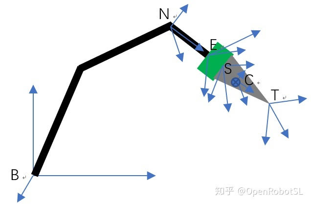
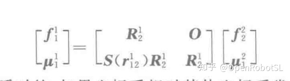
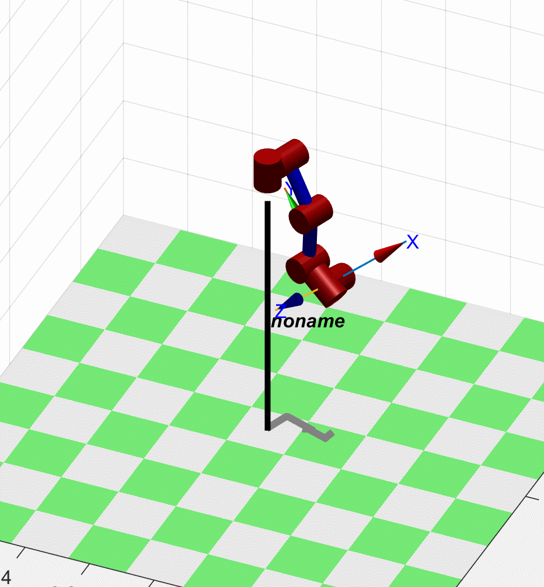

Home
如果使用末端六维力传感器，同时传感器后端有工具，那么传感器感受到的力是作用在传感器原点的，如何反应真实末端收到的力呢（首先补偿掉工具得重力对传感器得影响），首先看一下韩老师的知乎，关于重力补偿和变换 问题，这里给一个非常简单的方法（补偿重力后）

S：传感器坐标系
T：工具坐标系(包括传感器)
通过一个伴随矩阵，实际是通过速度映射求得，具体过程现代机器人学书上都有哈

上面书中写错了 右下角是u22。
作用就是 1坐标系 2坐标系之间得姿态变换是R12 位置平移是 r12 S代表反对称矩阵
这样就可以通过这个公式已知传感器坐标系下力-力矩f2/u2 ，求出末端工具坐标系下力-力矩f1/u1。然后f1 u1才是需要末端导纳控制得实际输入外力外力矩。（前提 传感器需要把连杆重力补偿掉）
导纳我们都写出来了 拖动还远么？
原理更简单了，就是外力转位移，或者外力形成速度用雅可比转关节空间。
唯一和导纳的区别就是，位移量改变后，撤掉外力不机械臂还原，保持当前状态就是点到点拖动了。
这种基于传感器+雅可比速度的方式不需要 逆解 也不需要动力学模式，就是贵了点。。
本代码不是工程算法，只是帮助大家理解实现思路，肯定是有很大优化空间的哦。大佬勿看，一眼就知道不咋地哈哈哈。
一开始给一个末端Z方向力，然后撤掉外力，再反向给力哦

代码
https://github.com/OpenRobotSL/RobotForceControl
======================================================================
我的测试结果及程序
下面是我测试的代码：